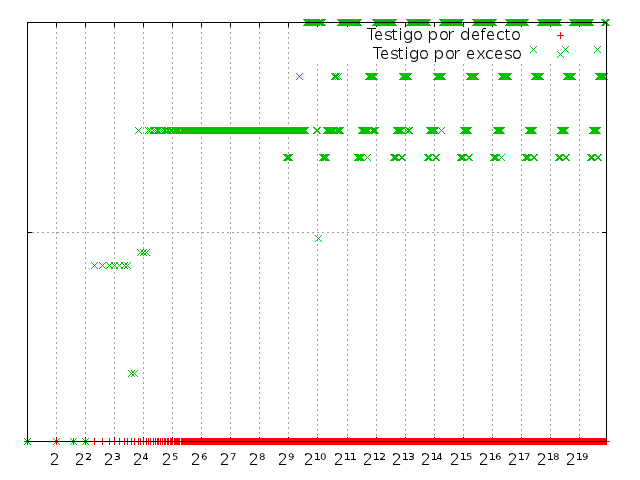
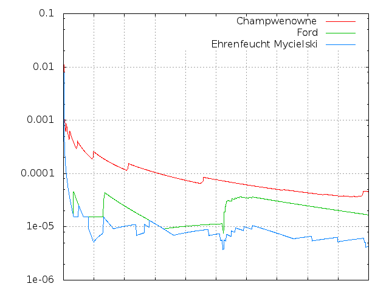

XX de Diciembre de 2012
Estudio experimental de
discrepancia de normalidad
Alejandro Alfonso
Directora
Verónica Becher
Conceptos Básicos
Alfabeto
Conjunto de al menos 2 elementos a los que llamamos símbolos.
{0, 1, 2}
Secuencia
Sucesión ordenada de símbolos finita o infinita.
01022
012012012012...
Alfabeto
Conjunto de al menos 2 elementos a los que llamamos símbolos.
{a, b, c}
Secuencia
Sucesión ordenada de símbolos finita o infinita.
abacc
abcabcabcabc...
Normalidad
Una secuencia s es normal si, para cada n, todos los bloques de tamaño n aparecen con igual frecuencia en el límite en s.
Por ejemplo, s es normal en base 2 si:
-
0 y 1
aparecen con frecuencia
1/2 cada uno
-
00, 01, 10, 11
aparecen con frecuencia
1/4 cada uno
-
000, 001, 010, 011,
100, 101, 110, 111
aparecen con frecuencia
1/8 cada uno
- Y así sucesivamente...
Normalidad – Ejemplos
Ejemplo 1
s = 0101010101010101010101010101010101010101010101...
- 0 y 1 aparecen con probabilidad 1/2.
- Pero 00 y 11 nunca aparecen.
- Entonces
s no es normal
Normalidad – Ejemplos
Ejemplo 2
s = 0123456789101112131415161718192021222324252627...
- La concatenación de todos los números naturales es normal.
- Esta secuencia se conoce como la secuencia de Champernowne.
Discrepancia de Normalidad
La discrepancia de normalidad de una secuencia s para la posición n y tamaño de bloque l es la máxima diferencia entre la frecuencia real y la frecuencia esperada de los bloques de tamaño l en los primeros n símbolos de s.
Por ejemplo
Si s = 0120010..., n = 7 y l = 1:
- El 0 aparece 4 veces en 012002:
|4/7 - 1/3| = 0.2380...
- El 1 aparece 2 veces en 012002:
|2/7 - 1/3| = 0.0476...
- El 2 aparece 1 vez en 012002:
|1/7 - 1/3| = 0.1904...
- La discrepancia es
0.2380... a causa del 0 que aparece demasiadas veces.
Secuencias de Bruijn
Una secuencia de Bruijn de orden n es una secuencia donde todos los bloques de tamaño n aparecen exactamente 1 vez.
Ejemplo
Una secuencia de Bruijn de orden 2 en base 3
0120022110
0120022110
0120022110
0120022110
0120022110
0120022110
0120022110
0120022110
0120022110
0120022110
Grafo de Bruijn
Un grafo de Bruijn de orden n es el grafo dirigido cuyos nodos son los bloques de n dígitos y dos nodos están conectados si los últimos n-1 dígitos del primer nodo coinciden con los primeros dígitos del segundo.

Grafo de Bruijn de orden 2 para base 2
Grafo de Bruijn – Teoremas
Un camino Hamiltoniano (pasa por todos los nodos) en un Grafo de Bruijn de orden n representa una secuencia de Bruijn de orden n.

Resultado: 00110
Grafo de Bruijn – Teoremas
Un ciclo Euleriano (ciclo que pasa por todos los ejes) en un Grafo de Bruijn de orden n representa una secuencia de Bruijn de orden n+1.

Resultado: 00

Resultado: 001

Resultado: 0011

Resultado: 001110

Resultado: 0011101

Resultado: 00111010
Secuencias de Bruijn Extendidas
En un alfabeto de al menos 3 dígitos, un camino Hamiltoniano en un grafo de Bruijn se puede extender a un ciclo Euleriano.

Resultado: 012

Resultado: 0120022

Resultado: 0120022110
Resultado: 01200221100010111210202122201
Secuencias de Bruijn Extendidas
Para alfabetos de 2 dígitos no podemos extender una secuencia de Bruijn de orden n a una de orden n+1, pero sí a una de n+2.
Ejemplos
- 0110010100001111011...
- 010001110100101011001101111100000100...
Base 2 – Secuencias Estudiadas
-
Champernowne
Concatenación de todos los naturales en bináreo.
-
Secuencia de Ford Extendida
La lexicográficamente menor de las de Bruijn Extendidas.
-
Ehrenfeucht-Mycielski
Empieza con 010.
Para encotrar el siguiente dígito, se busca el sufijo más largo que se repita y se niega el bit que le sigue a la última aparición.
Base 2 – Resultados Teóricos
Base 2 – Champernowne
Disrepancia para bloques tamaño 4

Testigos para bloques tamaño 5
Base 2 – Ford Extendida
Disrepancia para bloques tamaño 2
Testigos para bloques tamaño 11
Base 2 – Ehrenfeucht-Mycielski
Disrepancia para bloques tamaño 2
Testigos para bloques tamaño 6
Base 2 – Comparación
Disrepancia para bloques tamaño 10
Disrepancia para bloques tamaño 14

Disrepancia para bloques tamaño 16
Disrepancia para bloques tamaño 4
Base 3 – Secuencias Estudiadas
Variantes de Champernowne
Bajo algún criterio de orden, se enumeran los 3 dígitos: 0 1 2
Luego se enumeran los bloques de tamaño 2: 00 01 02 10 11 12 20 21 22
Y así sucesivamente para bloques de tamaño 3, 4, 5...
Secuencias estudiadas
Orden lexicográfico
0 1 2 + 00 01 02 10 11 12 20 21 22 + ...Orden aleatorio
0 2 1 + 00 22 20 12 21 01 11 10 02 + ...Orden según cantidad de apariciones del símbolo 2
0 1 2 + 00 01 10 11 02 12 20 21 22 + ...
Base 3 – Secuencias Estudiadas
Secuencias de Bruijn Extendidas
Cuando se extiende el camino Hamiltoniano, de los 3 ejes que tiene cada nodo tenemos 2 que no fueron ya usados por este camino.
Según el criterio que decide cuál eje tomar, se obtienen secuencias distintas.
Secuencias estudiadas
Siempre se toma el eje lexicográficamente menor
Con este criterio obtenemos la secuencia de Ford extendida para base 3.Casi siempre se toma el eje lexicográficamente menor
75% de probabilidad de tomar el eje lexicográficamente más chico.Se toma un eje al azar
50% de probabilidad de tomar el eje lexicográficamente más chico.
Base 3 – Champernowne (Lexicográfica)
Disrepancia para bloques tamaño 3
Testigos para bloques tamaño 5
Base 3 – Champernowne (Aleatoria)
Disrepancia para bloques tamaño 3
Testigos para bloques tamaño 3
Base 3 – Champernowne (Evita dígito)
Disrepancia para bloques tamaño 3
Testigos para bloques tamaño 3
Base 3 – Ford Extendida
Disrepancia para bloques tamaño 3
Testigos para bloques tamaño 7
Base 3 – De Bruijn Extendida (25%)
Disrepancia para bloques tamaño 3
Testigos para bloques tamaño 4
Base 3 – De Bruijn Extendida (50%)
Disrepancia para bloques tamaño 3
Testigos para bloques tamaño 3
Base 3 – Variantes de Champernowne
Disrepancia para bloques tamaño 3
Base 3 – Secuencias de Bruijn
Disrepancia para bloques tamaño 3
Base 3 – Comparación Parcial
Disrepancia para bloques tamaño 3
Disrepancia para bloques tamaño 6
Disrepancia para bloques tamaño 10
Disrepancia para bloques tamaño 1
Base 3 – Comparación con Todas
Disrepancia para bloques tamaño 8
Disrepancia para bloques tamaño 2
En Resumen
- Las variantes de Champernowne y secuencias de Bruijn reflejan en la forma de arcos de su discrepancia su construccioń que busca incluir todos los bloques en orden.
- La variante de Champernowne que posterga las apariciones de un dígito, construida para maximizar la discrepancia, en efecto la maximiza.
- La secuencia de Ford Extendida maximiza la discrepancia de las secuencias de Bruijn, la cual disminuye a medida que aumenta la aleatoriedad en su construcción.
- Las secuancias de Bruijn tienen mayor discrepancia que Champernowne y sus variantes para bloques chicos, pero esto se revierte para bloques más grandes.
- La secuencia de Ehrenfeucht-Mycielski mantiene su discrepancia por debajo que las otras secuencias que se sabe que son normales. Esto indicaría que la secuencia de Ehrenfeucht-Mycielski es normal.
Conjeturas
-
La discrepancia de las secuencias de Bruijn extendidas es de orden  .
.
Es decir, su discrepancia es la misma que la de Champernowne.
-
La discrepancia de la secuencia de Ford Extendida es mínima para la familia de secuencias de Bruijn extendidas.
-
La discrepancia de las secuencias de Champwenowne (original) y Ford Extendida pueden calcularse mirando únicamente los bloques que son rachas de 0.
Es decir, la discrepancia de estas secuencias es la diferencia entre la frecuencia real y esperada de los bloques de forma 0i.
/

 »
»